牙醫知識 Dental Knowledge
掌握治療前後的關鍵照護觀念
整理治療前後常見問題、日常照護重點與專科治療觀念，幫助您在看診前更安心，也讓治療後的保養更有方向。
最新醫療知識
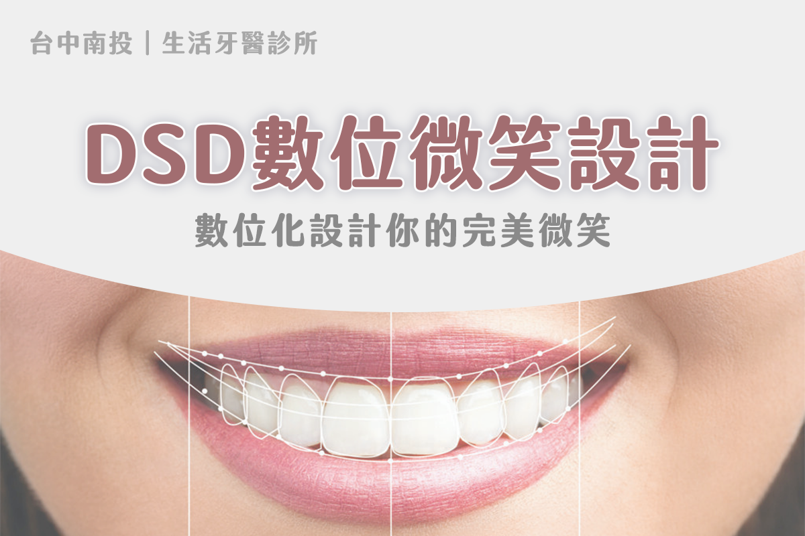
DSD 數位微笑設計：前牙大範圍贋復前，先把笑容規劃清楚
了解 DSD 如何整合臉型、唇線、牙齦、牙齒比例與數位掃描資料，協助規劃多顆前牙修復閱讀更多...
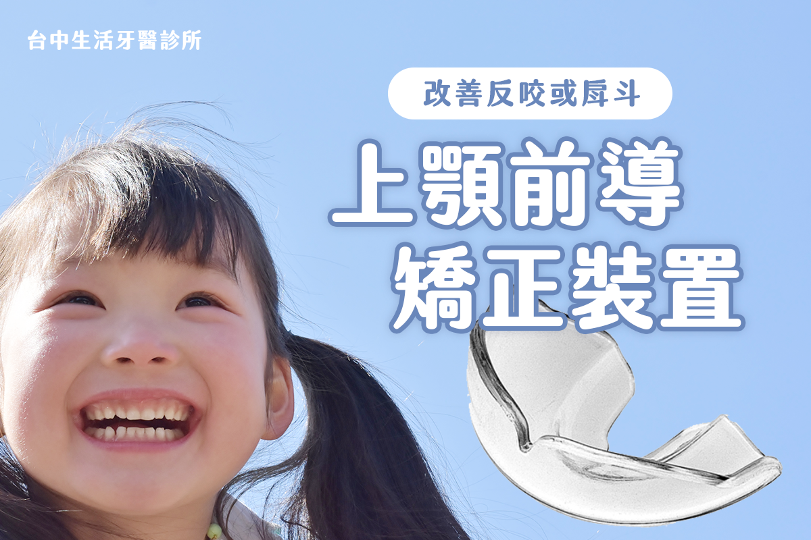
學齡矯正－上顎前導矯正裝置
了解兒童反咬合的早期治療時機、每日配戴時間、咬合維持與療程注意事項。閱讀更多...
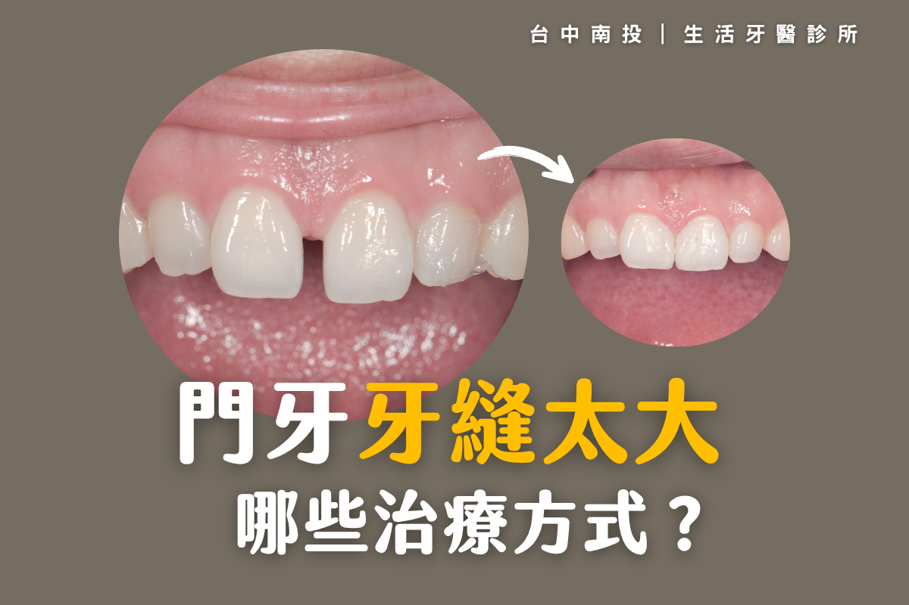
門牙有縫怎麼辦？牙縫太大想補牙縫有哪些治療方式？
整理樹脂補牙縫、陶瓷貼片、全瓷冠與矯正治療的適用情況。閱讀更多...

為什麼你需要顯微根管治療？從原理到優勢的懶人包
顯微視野能協助處理複雜根管，提高保存自然牙的機會。閱讀更多...
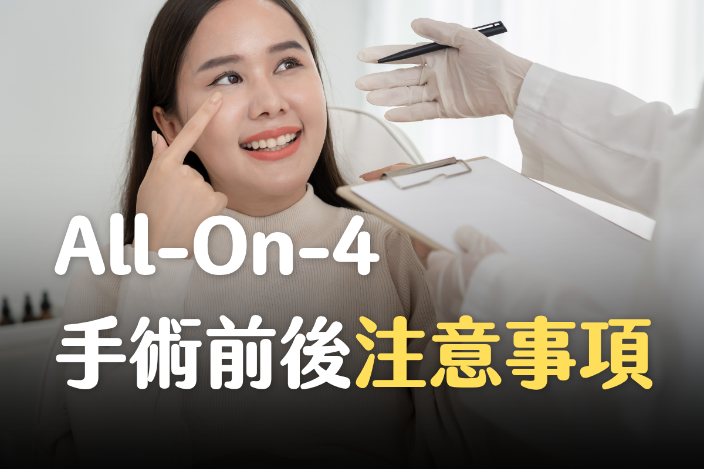
All-On-4 手術前後注意事項
整理術前健康檢查、特殊用藥告知、麻醉恢復與返家安全提醒。閱讀更多...

全瓷冠完成後，這 5 件事請一定要知道
完成全瓷冠後，飲食、清潔與咬合觀察都會影響假牙穩定。閱讀更多...
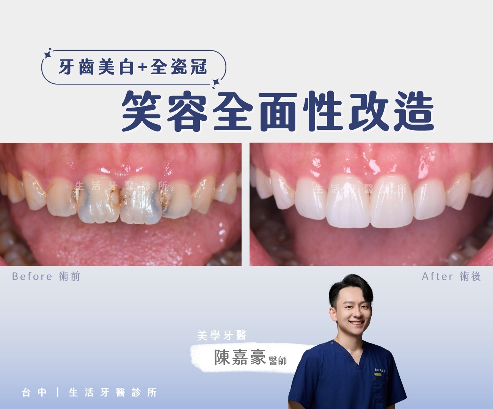
【前牙美學案例】告別門牙蛀牙變黑：全瓷冠搭配美白，笑容全面改造
笑容是最好的名片，但當門牙出現齲齒、變黑時，往往讓人不敢自信開口。本次案例中的患者，閱讀更多...
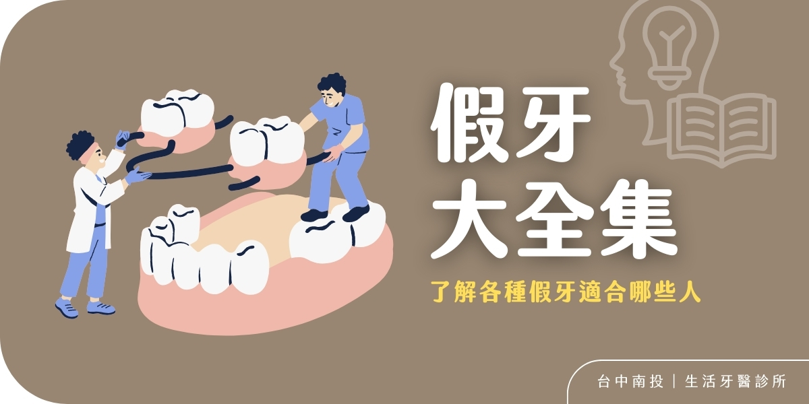
【台中牙醫推薦】缺牙怎麼辦？單顆假牙、牙橋、活動假牙完整種類與優缺點分析
當牙齒因為蛀牙、牙周病或意外缺損時，及時修補不僅是為了美觀，更是為了保護剩下的牙齒齒閱讀更多...
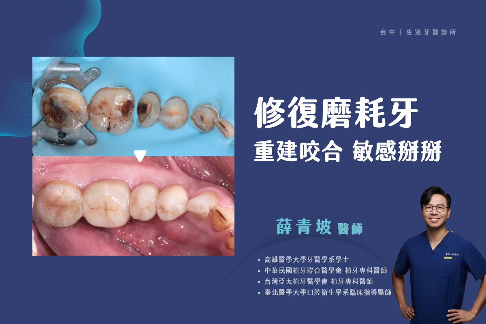
牙齒變短、變酸了嗎？給磨損的牙齒一場溫柔的修復
了解磨牙原因、過度磨耗的影響，以及複合樹脂、陶瓷嵌體與全瓷冠的修復方式。閱讀更多...

洗牙洗不掉的牙齒污垢？噴砂美白還原牙齒淨白本色
了解洗牙與噴砂美白的差異，以及適合清除茶垢、咖啡垢與菸垢的方式。閱讀更多...
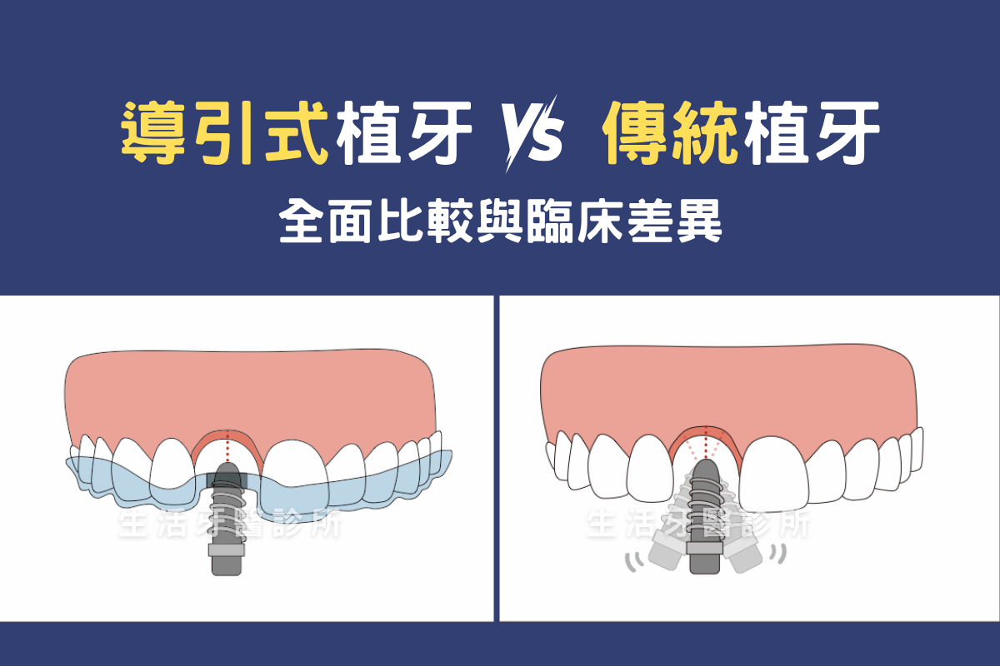
導引式植牙 vs. 傳統植牙：成功率、安全性與臨床差異
從數位規劃、精準度、手術風險、恢復期與長期穩定性，比較兩種植牙方式。閱讀更多...
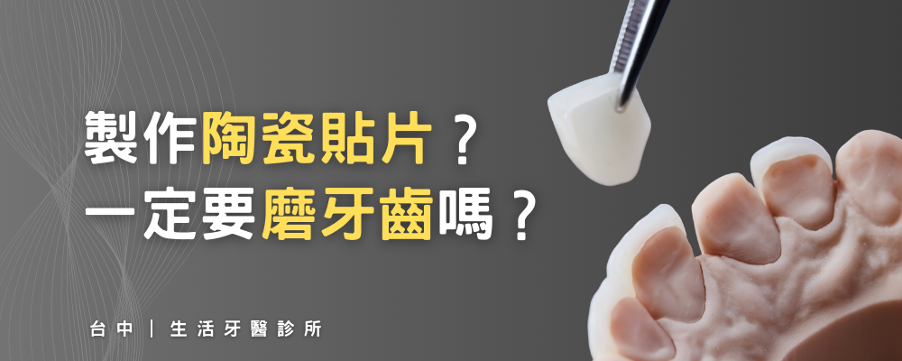
製作陶瓷美齒貼片一定要磨牙齒嗎？台中專業牙醫來解答！｜生活牙醫診所
身為專業的台中牙醫診所，我們每天都會遇到許多對陶瓷貼片充滿好奇與期待的患者。其中一個閱讀更多...
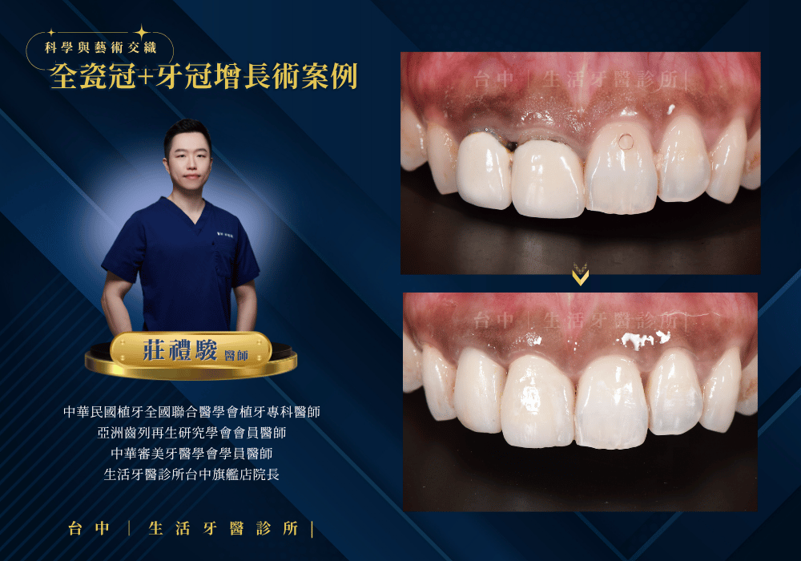
【案例分享】全瓷冠＋牙冠增長術，找回對稱自然的笑容｜台中生活牙醫 莊禮駿醫師
一位患者因對前牙外觀不滿意前來求診，經台中生活牙醫診所莊禮駿醫師專業評估後，發現其牙閱讀更多...
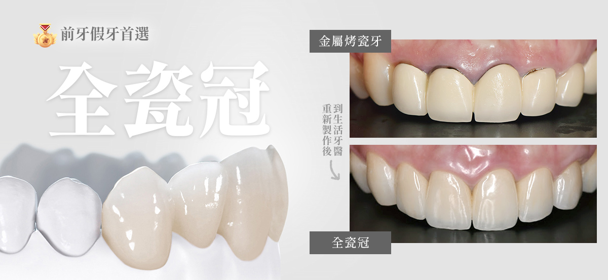
【全瓷冠是什麼？適應症、材質、流程一次解析】全瓷牙冠專業懶人包｜台中牙醫推薦
全瓷冠是什麼？閱讀更多...
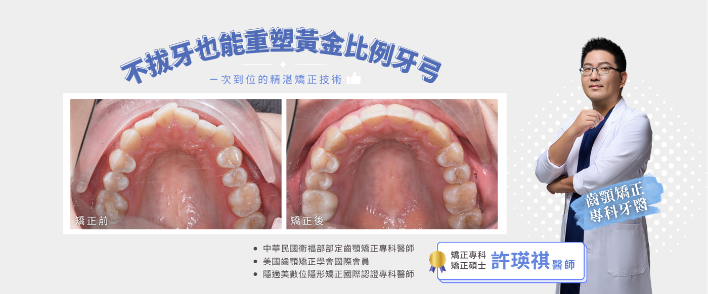
台中齒顎矯正專科｜不拔牙矯正 齒列不整齊 實際案例分享｜台中生活牙醫
門牙爆爆凸凸的擁擠齒列，讓她笑起來總是有點不自在，台中齒顎矯正專科牙醫 許瑛祺醫師 閱讀更多...
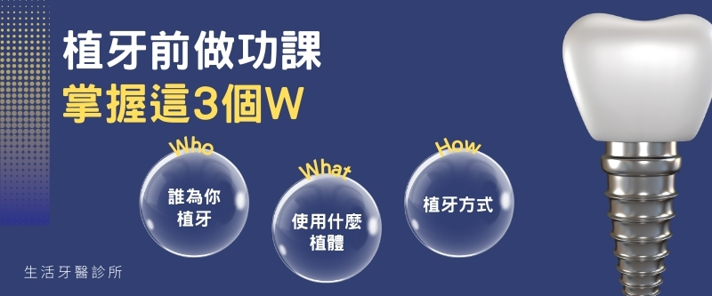
植牙前做功課 掌握這3個W
相信大家對於植牙的期許都是希望可以用一輩子，而根據統計，人類的口腔一天平均要咀嚼18閱讀更多...
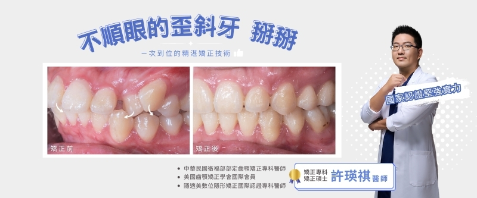
台中齒顎矯正專科-上顎前凸(暴牙)+齒列不整 實際案例照片@台中生活牙醫
除了往外暴的門牙讓側臉嘴部凸凸的、歪斜的虎牙也導致笑容不對稱， 凌亂的牙齒讓她可愛的閱讀更多...
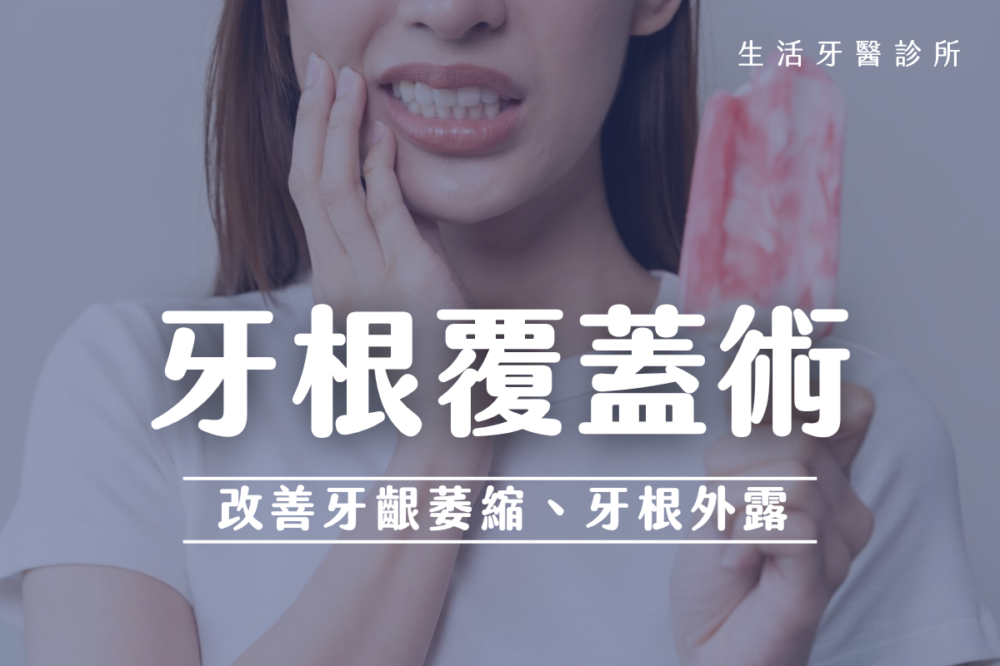
牙齦萎縮、牙根外露怎麼辦？牙根覆蓋術實際案例
從實際案例了解薄型牙齦評估、自體結締組織移植及術後追蹤重點。閱讀更多...
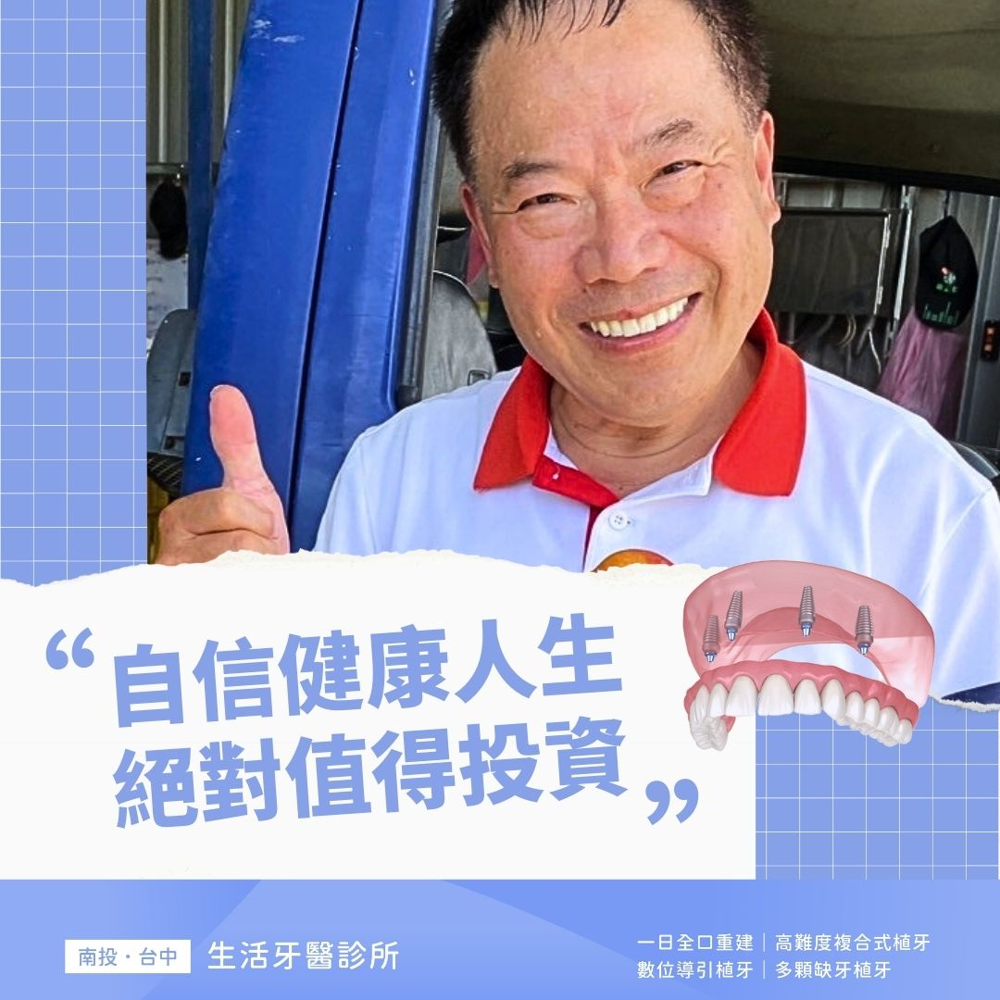
【All-On-4全口重建實際案例】自信健康人生，絕對值得投資
飽受活動假牙反覆脫落之苦，時不時得擔心在外出糗，好不容易鼓起勇氣進行了兩次植牙卻都以閱讀更多...
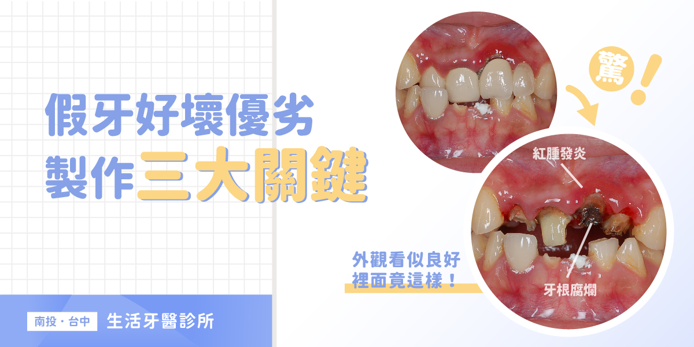
假牙品質好壞 3大製作關鍵
假牙製作的優劣會體現在耐用度，雖然看起來都一樣是白白的假牙，裡頭的玄機卻大有來頭，像閱讀更多...
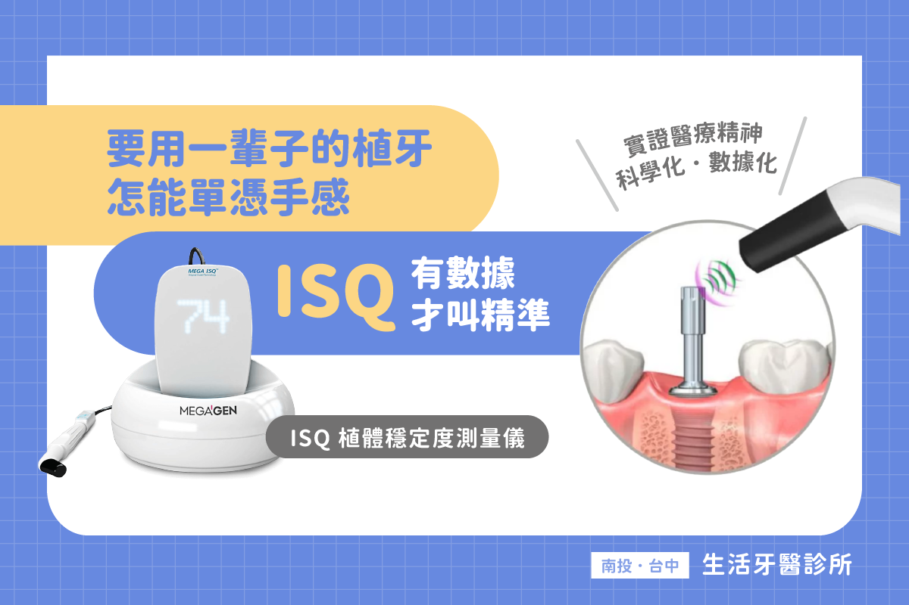
植牙穩固了沒？讓 ISQ 數據告訴你
了解 ISQ 共振頻率分析如何量化植體穩定度，協助醫師評估骨整合與後續假牙療程。閱讀更多...
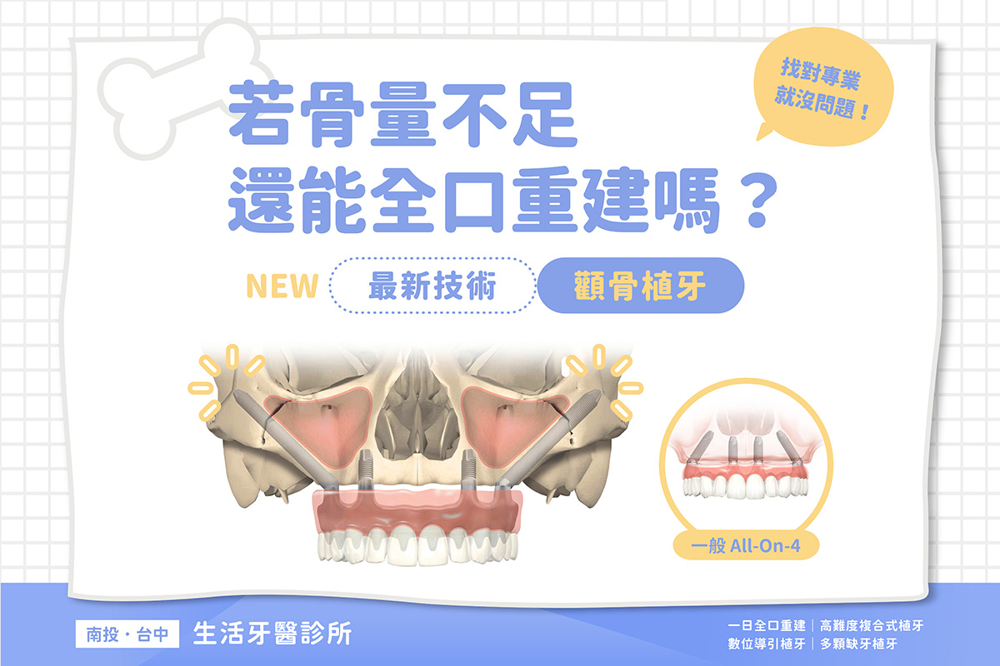
顴骨植牙—全口重建骨量不足的救星
雖然 All-On-4 不需補骨即可完成 但如果上顎後牙區骨質嚴重流失 甚至萎縮到無閱讀更多...
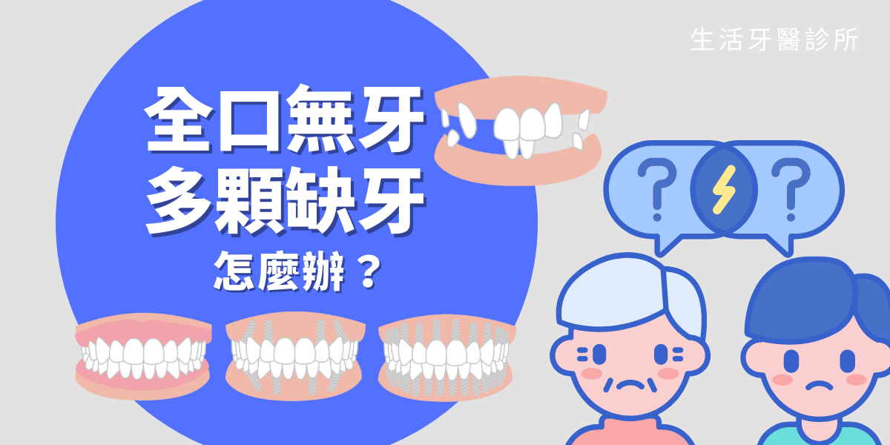
全口無牙或多顆缺牙怎麼辦?除了活動假牙有哪些治療方式?
在全口無牙或多顆缺牙的狀況下，大家第一個想到的贋復方法都是「活動假牙」，的確過往在科閱讀更多...
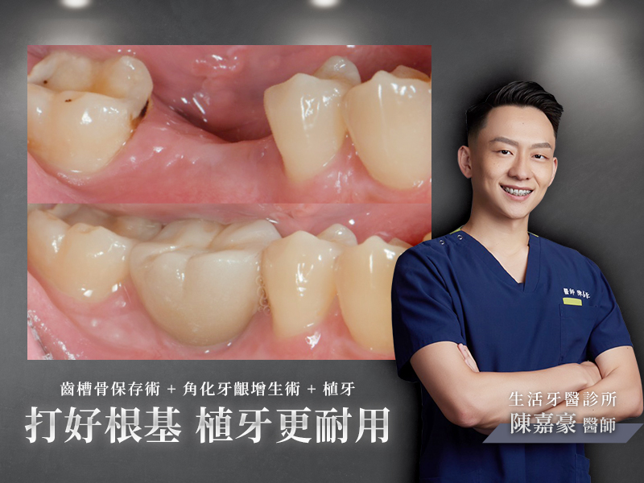
打好根基，植牙更耐用｜齒槽骨保存術+角化牙齦增生術+植牙 實際案例
陳先生多年前在其他家診所拔除右下第一大臼齒，空著很久，終於下定決心要來植牙。從X光片閱讀更多...
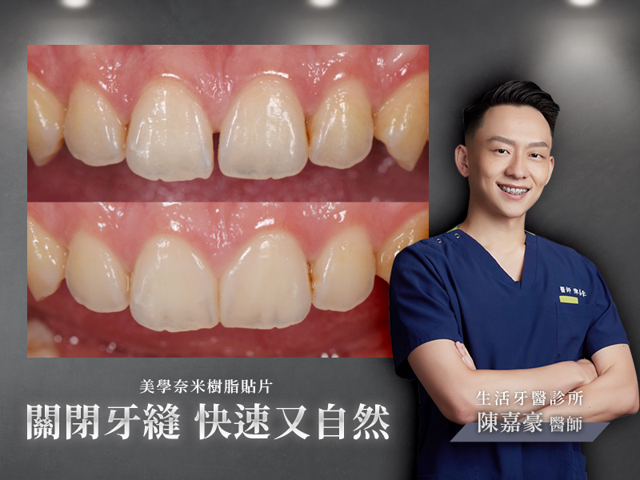
美學奈米樹脂貼片 輕鬆關閉牙縫(門牙牙縫太大)
「樹脂」是牙科治療中每天都會碰到的東西，從常見的補蛀牙、假牙柱心製作、齒雕黏著...閱讀更多...
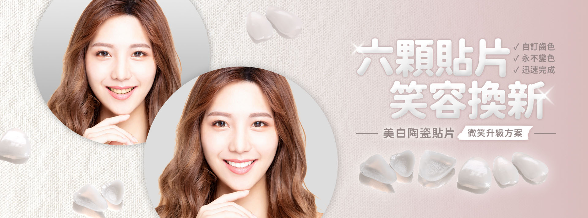
台中陶瓷貼片推薦｜六顆貼片 笑容換新，美白陶瓷貼片給你最閃耀的動人笑容
閱讀更多...
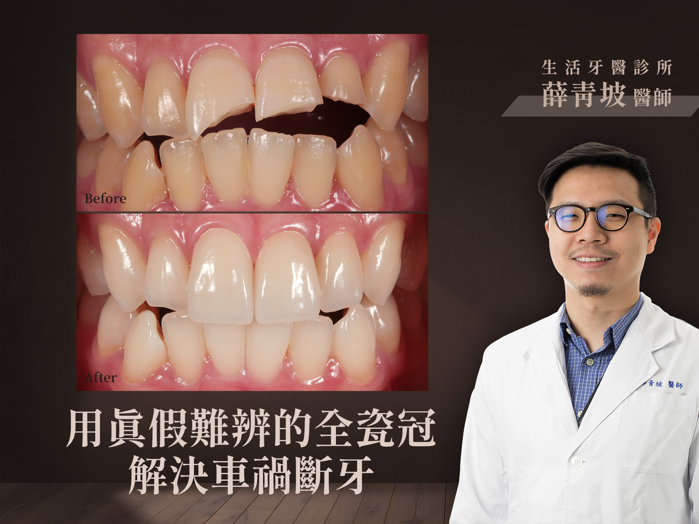
用真假難辨的全瓷冠，解決門牙車禍斷牙
這位患者因為車禍撞斷了牙齒 經過臨床診斷並討論後 決定先進行牙齒居家美白，提亮目前偏閱讀更多...
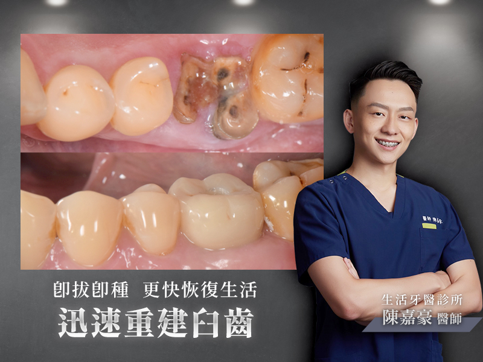
即拔即種植牙+補骨，迅速重建臼齒
患者因為左下第一大臼齒因長期蛀牙，吃東西容易塞食物而前來就診。從X光片可以看到，牙齒閱讀更多...
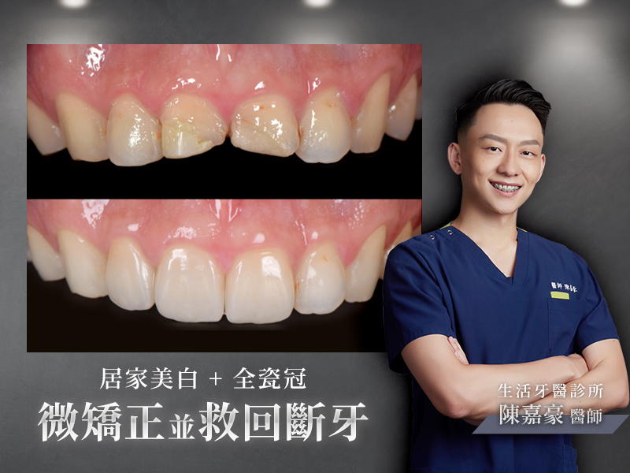
解決車禍斷牙+微矯正只需要全瓷冠
一位非常陽光的研究所男學生，因為車禍摔斷了三顆牙齒( 騎車真的要小心啊... )，在閱讀更多...
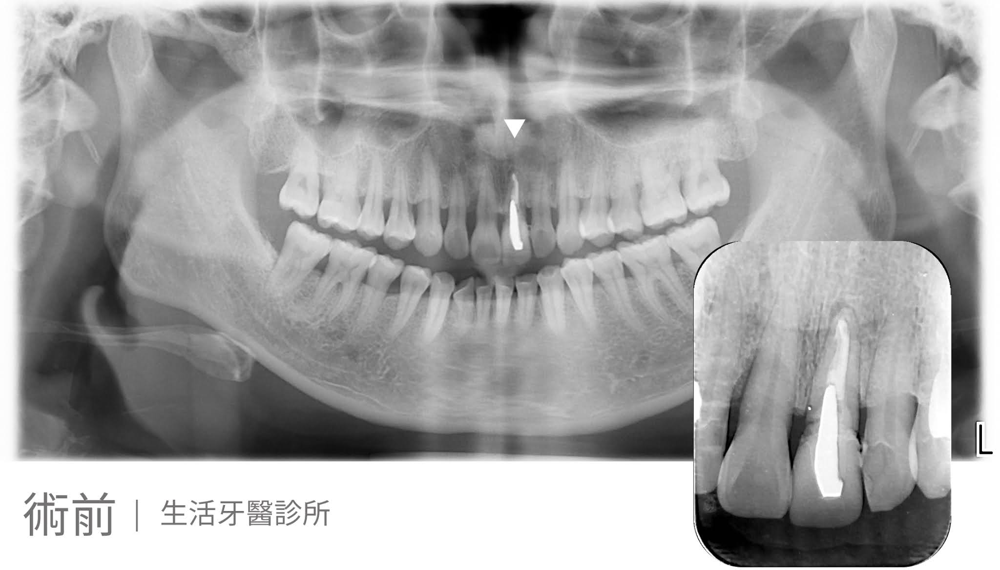
拔除斷裂的牙齒，植牙拾回美觀門面
「醫師，我牙齒裂掉了」 這位患者一入門便劈頭這麼說著 接著便為他進行更進一步的檢查 閱讀更多...
台中冷光美白推薦牙醫 幫你輕鬆秒懂牙齒美白效果差異、價格費用、療程時間、冷光美白維持多久時間
閱讀更多...
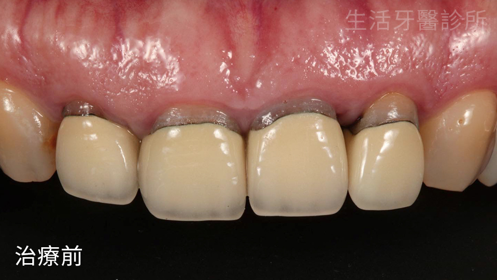
換掉黑黑的舊假牙，全瓷冠給你嶄新笑容
因為牙齦萎縮露出牙根、加上不理想的假牙顏色型態，讓這位講師在上台時總是不自在地遮遮掩閱讀更多...
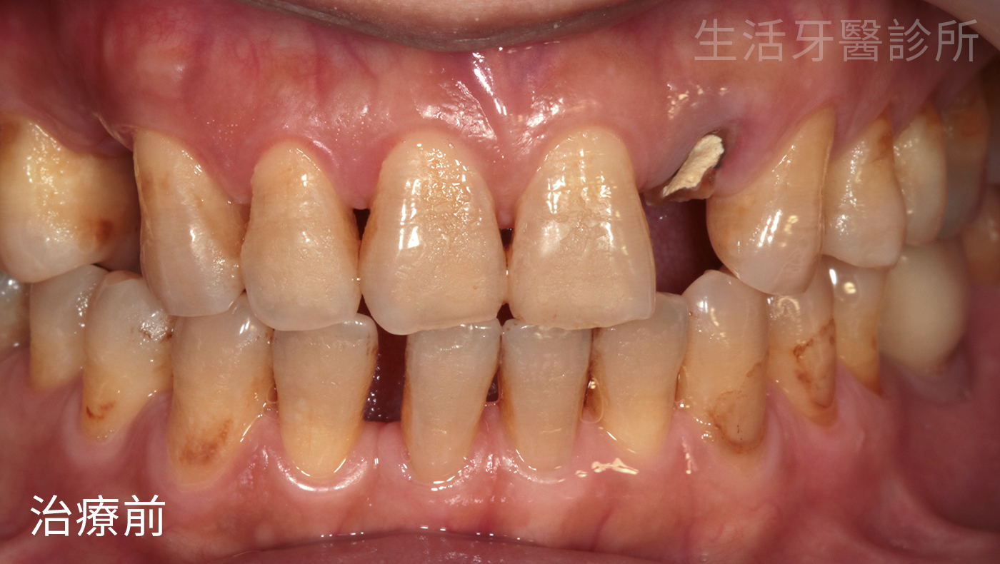
牙齒斷掉怎麼辦？矯正+全瓷冠假牙救回來，誰說一定要植牙
患者的圖中右上門牙因故斷裂 希望能夠盡力保留牙齒 此外，圖中左上第一小臼齒也缺失了閱讀更多...
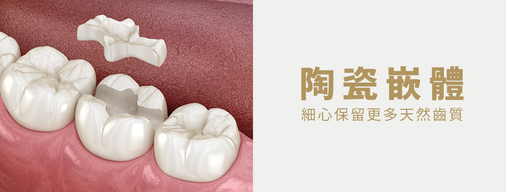
台中牙醫推薦｜齒雕（陶瓷嵌體）- 其實，有時候你可以不必做假牙
最近有些患者，來到診間，特別詢問齒雕(陶瓷嵌體)的製作流程，這篇文章把完整的齒雕流程閱讀更多...
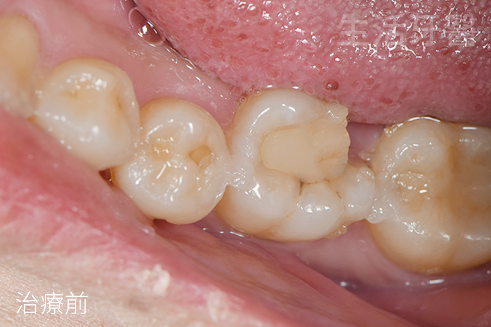
台中牙醫推薦｜牙齒咬崩咬裂怎麼辦？齒雕讓你保留牙齒，不用抽神經，免做假牙
患者不小心把牙齒咬裂了（遠心舌側咬頭） 緊張地來就診 當然，遇到這樣的情況閱讀更多...
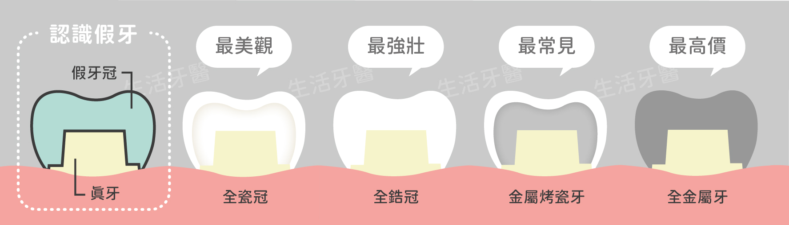
台中牙醫假牙材質比較懶人包！輕鬆秒懂假牙套材質、價格費用、耐用、美觀差異比較
閱讀更多...
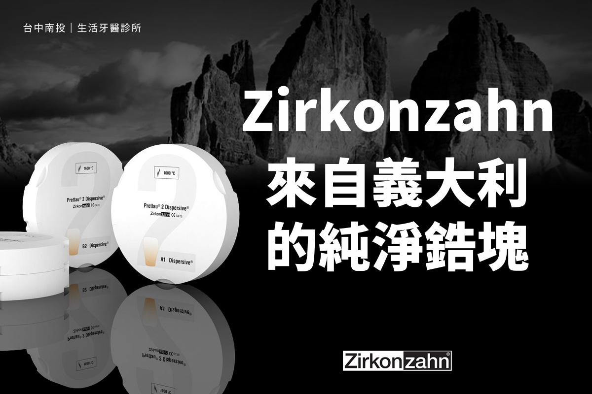
Zirkonzahn 義大利鋯塊：全鋯冠的耐咬材質與數位製程
認識義大利 Zirkonzahn 二氧化鋯瓷塊、材料特性、原廠數位製程與品質保障。閱讀更多...
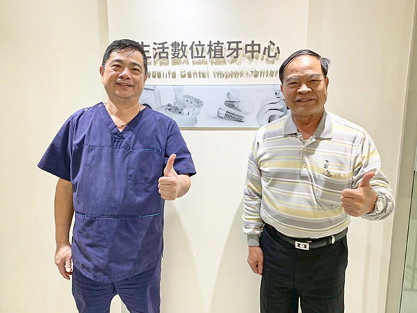
南投植牙推薦｜數位導引式植牙幫助校長重拾笑容-生活牙醫
劉校長因為剩餘齒質不足導致假牙冠脫落而前來求診 在經植牙專科醫師 柳朝升醫師診斷後 閱讀更多...
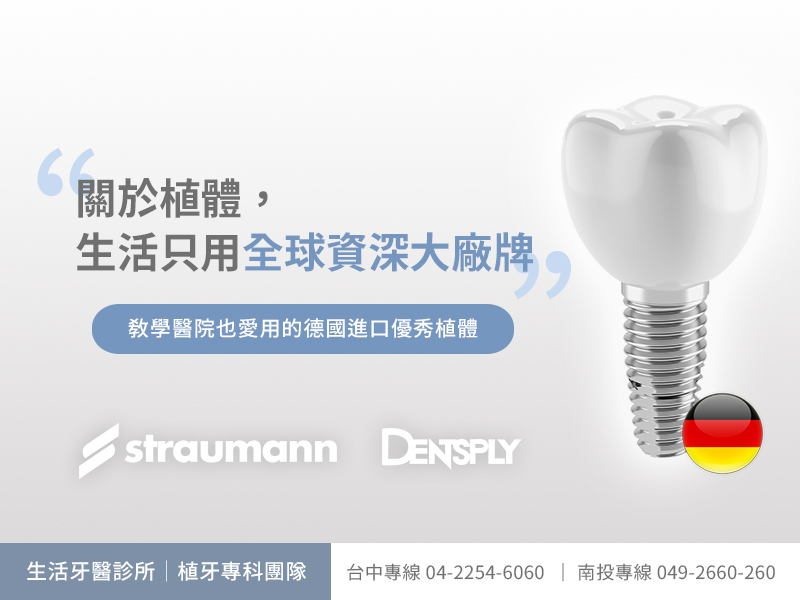
生活牙醫植牙的植體品牌介紹-認識植體差異
閱讀更多...
台中美齒陶瓷貼片推薦-4顆全瓷貼片+冷光美白 實際案例分享-台中生活牙醫
矯正後的你 是不是也有同樣困擾嗎？ 有時忘了戴維持器 牙齒就跑掉了閱讀更多...
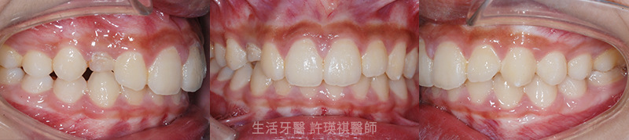
台中兒童矯正-牙齒長不出來 上顎犬齒阻生齒拉出 實際案例分享@台中生活牙醫
「醫師，為什麼我們家弟弟的牙齒一直長不出來？」 在臨床上，我們偶爾可以看到患者被牙齒閱讀更多...
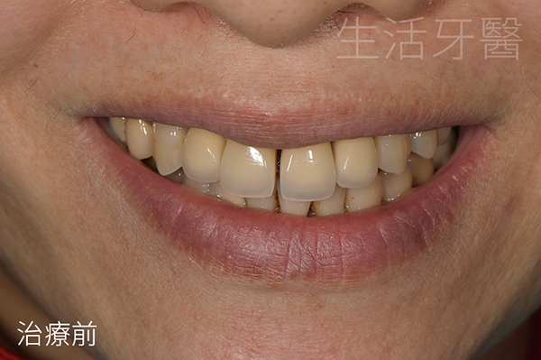
換掉舊假牙重新打造全瓷冠 再造美麗笑容
患者是一位中年女性患者 希望能改善已經製作多年的門牙舊假牙不好看的困擾閱讀更多...
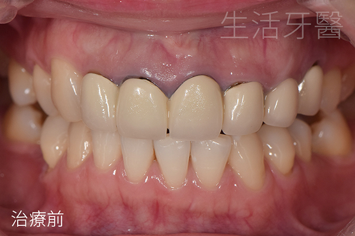
補牙樹脂變色換成全瓷冠假牙 輕鬆找回完美笑容
患者求診 希望 台中前牙美學醫師 莊禮駿醫師 能改善她門牙不美觀的問題閱讀更多...

全瓷冠假牙重作打造完美笑容 告別牙齦變黑的金屬假牙 @台中生活牙醫
這位患者因為上顎前牙，牙齦處發生腫脹的情形，而前來求診 令她感到不舒服的就是上圖中已閱讀更多...
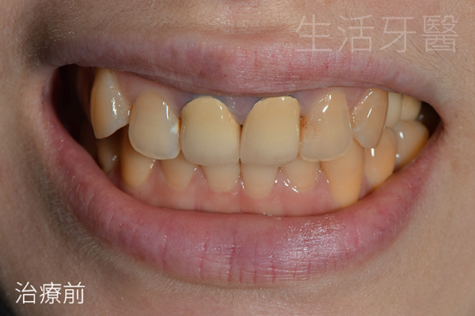
全瓷冠替代變黑舊假牙合併居家美白治療 實際案例@台中生活牙醫
這位患者由於齒色過黃、發黑的牙齦和不自然的門牙假牙 讓她的笑容黯然失色 因此前來求診閱讀更多...
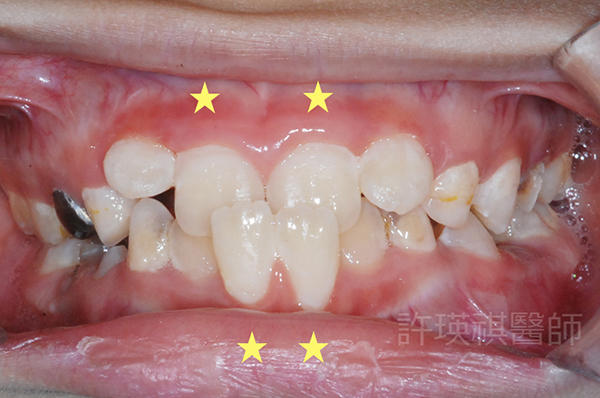
台中兒童牙齒矯正推薦 - 錯咬 局部牙齒矯正 門牙局部矯正 實際案例分享@台中生活牙醫
★星號為施予局部矯正的牙位閱讀更多...
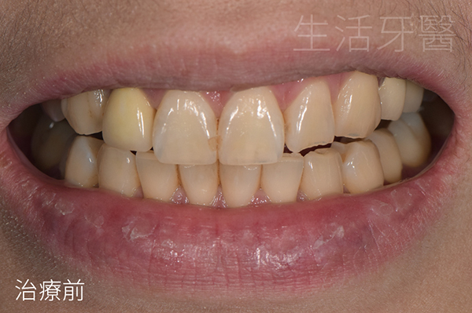
台中牙醫推薦 側門牙假牙重做全瓷冠合併牙齒居家美白療程 實際案例分享@台中生活牙醫
顏色不合宜的假牙冠即使只有一顆 突兀的存在就會讓笑容大打折扣閱讀更多...
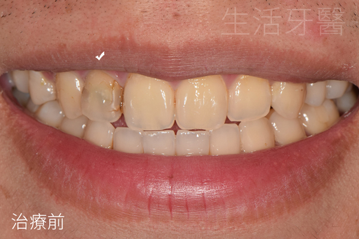
台中 全瓷牙冠 推薦 - 側門牙 全瓷冠假牙 實際案例分享@台中生活牙醫
這位患者在看了老婆製作全瓷冠、笑容煥然一新之後 也決定要來改善自己的門面 台中前牙美閱讀更多...
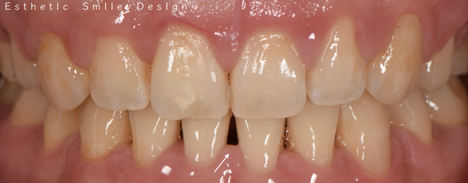
兩顆全瓷貼片合併冷光美白改善矯正後牙縫黑三角實際案例分享@台中生活牙醫
▲矯正後，下排牙齒因牙肉萎縮產生黑三角，同時想要讓牙齒變白閱讀更多...
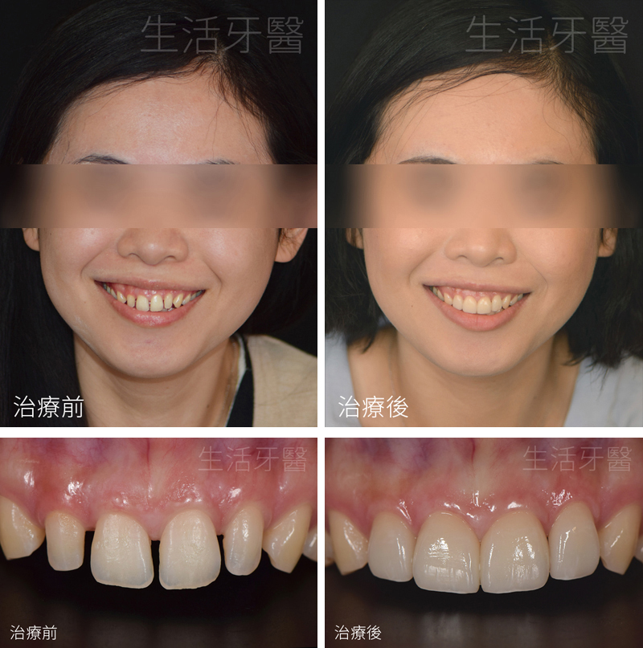
台中陶瓷貼片 - 四顆全瓷貼片 改善門牙牙縫太大 DSD微笑設計實際案例分享@台中生活牙醫
有時候只需要施予一點點魔法 就可以讓燦爛的笑容更甜美、更燦爛 現在我們就一起來看看台閱讀更多...
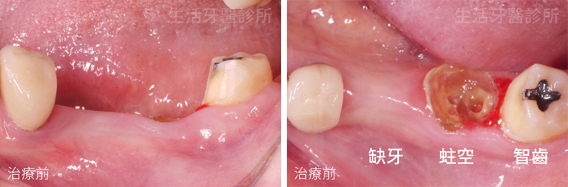
【台中植牙推薦】下顎後牙植牙重建咬合成功案例@台中生活牙醫
這位患者廖小姐左下長期缺牙使咬合功能單邊喪失，長期下來她深受只能用右邊咀嚼過度受力之閱讀更多...
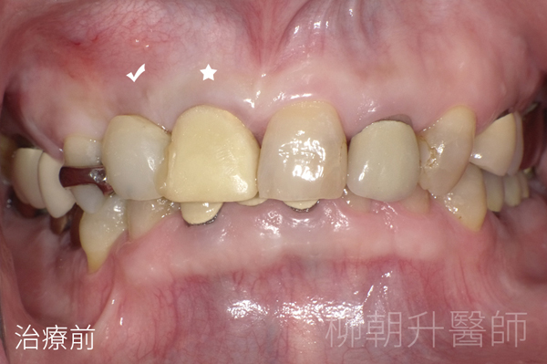
假牙牙橋牙根斷裂後重新製作假牙冠及植牙@南投生活牙醫
患者在咀嚼時疑似牙根斷裂，並有牙痛的情形，於是前來求診 經由竹山植牙醫師 柳朝升醫師閱讀更多...
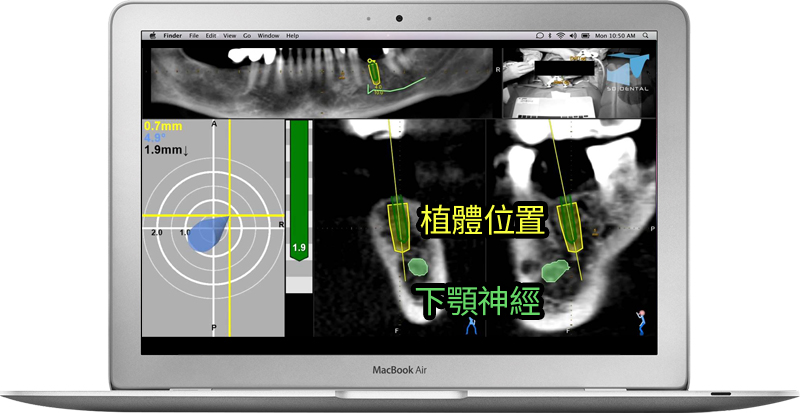
南投植牙∣GPS導航植牙 透視植牙準度更上層樓
科技日新月異，醫療進化速度也越來越快，好比植牙，從前只能憑借醫師手感來植入植體，醫師閱讀更多...
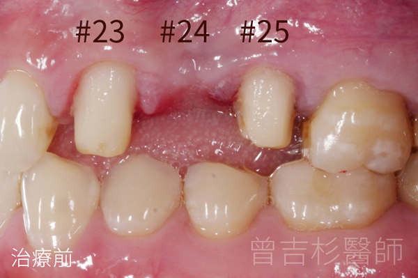
植牙取代假牙牙橋植牙實際案例分享@台中生活牙醫
這位患者的圖中右上方牙齒#23.24.25原為假牙牙橋 因為年限已久、密合度不佳而進閱讀更多...
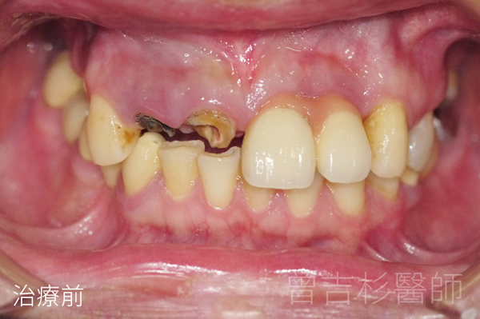
台中美學植牙-門牙植牙全口重建實際案例分享
患者圖中左上門牙及側門牙斷裂，嚴重影響門面美觀 經醫師評估病患上顎後牙缺損嚴重 造成閱讀更多...
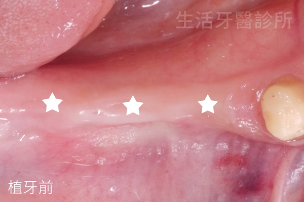
台中植牙專科醫師推薦-臼齒植牙三顆+補骨手術實際案例分享
這位女士的下顎後牙有三顆缺牙(#45.46.47)，嚴重影響生活 且由於長期缺牙的關閱讀更多...
推薦台中牙醫-牙齦萎縮.牙齒敏感 治療-前牙牙齦補肉手術 實際案例分享
牙齦萎縮在臨床上很常見，可能會有單顆或多顆不同程度的牙齦萎縮，大部分發生在頰側，若病閱讀更多...
南投植牙推薦 - 門牙植牙 4年後植牙術後追蹤 實際案例分享
這位患者的圖中右側門牙假牙（打勾處）發炎疼痛 經 南投植牙專科醫師 柳朝升醫師 臨床閱讀更多...
台中全瓷冠推薦 - 四顆門牙全瓷冠 前牙美學實際案例
這位患者希望能改善自己不滿意的前牙區和外露的假牙牙根而前來求診閱讀更多...
台中陶瓷貼片,全瓷貼片-門牙太開 牙縫太大 美觀重建實際案例
這位患者的門牙牙縫過大，造成前牙區美觀不佳 經過莊醫師詳細的評估後 建議製作兩顆門牙閱讀更多...
南投植牙推薦 - 大鞍國民小學校長 植牙推薦生活牙醫
我是一個熱愛教育的工作者，每天都要面對許多師生，開口說話更是家常便飯，不過長期以來我閱讀更多...
台中透明牙套∣隱適美隱形矯正，誰說矯正非得大鋼牙
台中透明牙套｜隱適美隱形矯正這種新穎的矯正方式已有400萬人採用，堪稱席捲全球，而為閱讀更多...
台中全瓷冠| 一樣都是全瓷冠，成果卻差很多
這位患者因為圖中右門牙假牙破損，所以希望重新製作新的假牙閱讀更多...
台中牙周病推薦∣牙周病不治療 小心失智症上身
生活牙醫台中牙周病專科醫師團隊表示，在近年的臨床研究發現，罹患牙周病長達10年以上的閱讀更多...
台中陶瓷貼片,全瓷貼片,全瓷牙冠-全瓷貼片兩顆和全瓷冠四顆 前牙美學 美觀重建實際案例
這次患者的四顆門牙為假牙牙橋 除了有金屬內冠假牙的通病 - 顏色霧白不自然外 牙齦也閱讀更多...
台中假牙|全鋯冠耐咬不怕破 後牙假牙材質最佳選擇
全鋯冠是目前近年醫界很夯的假牙材質，由於是由電腦3D一體成型切割而成，所以又稱為全型閱讀更多...
台中 全瓷牙冠 前牙三顆 + 牙齦美容術 實際案例
這位患者因為想改善門面(牙齒美觀)而前來求診閱讀更多...
台中植牙 下顎後牙單顆人工植牙暨補骨和補皮(角化牙齦增生術) 實際案例
這位施先生的左下第一大臼齒的牙周發炎，持續化膿腫痛 在經過牙周治療多次卻無改善後 醫閱讀更多...
台中 陶瓷貼片+全瓷牙冠+居家美白 實際案例
這位病人因為過去的假牙不自然，困擾她多年閱讀更多...
DSD技術輔助陶瓷貼片 打造完美笑容更精準
陶瓷貼片又稱為全瓷貼片或牙齒美白貼片，亦有牙醫診所稱之為「牙齒微整形」。陶瓷貼片是依閱讀更多...
快速全口重建的新選擇「All-On-4」迅速、經濟、好咬
傳統全口植牙手術需植入12至16顆的人工牙根，為減輕病人的腫痛感，全口植牙需分多次手閱讀更多...
生活牙醫颱風休診標準與政府同步
生活牙醫診所颱風休診標準與政府同步， 倘若人事行政局宣布該縣市停止上班，生活牙醫則同閱讀更多...
台中植牙∣植牙價錢費用大剖析
植牙費用、植牙價格價錢、植牙分期等常常都是患者在臨床上所提出的第一個疑問。台中植牙價閱讀更多...
台中假牙∣假牙的品質好壞差在哪
一顆假牙品質的好壞不是單單從假牙價錢來判斷，是由許多面向組合而成，像是牙醫師的技術、閱讀更多...
台中植牙推薦∣植牙前先聽看聽 要有保固才安心
許多人以為植牙只要植牙手術當下成功後就沒事了，因此諮詢時也不會特別注意植牙保固，而等閱讀更多...
台中植牙推薦∣如何選擇植牙牙醫診所
現在坊間到處充斥著標榜植牙的牙醫診所，台中植牙推薦也是琳琅滿目，且花招百出，生活牙醫閱讀更多...
台中冷光美白∣如何挑選冷光美白牙醫診所
冷光美白看似輕鬆容易，但是裡頭卻隱藏著大學問，若不精心挑選恐怕花了大錢卻吃了虧，現在閱讀更多...
台中隱形牙套∣隱適美隱形矯正，牙齒矯正不再大鋼牙
台中隱形牙套推薦｜台中生活牙醫診所牙齒矯正專科醫師暨隱適美國際認證醫師許瑛祺醫師表示閱讀更多...
台中植牙∣無痛免開刀植牙，小心話術欺騙
生活牙醫診所發現，現今有許多牙醫診所為了拉攏植牙患者，不惜以各式話術來包裝自己，像是閱讀更多...
開始您的微笑蛻變之旅
預約初診諮詢，由醫師親自評估您的狀況，為您規劃最適合的全瓷冠修復方案。無需承擔任何壓力，帶著您的疑問來，我們一起找到最好的解答。